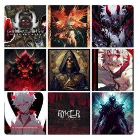
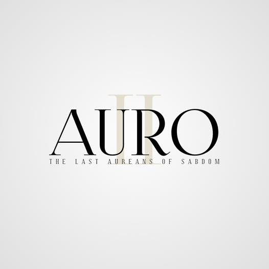
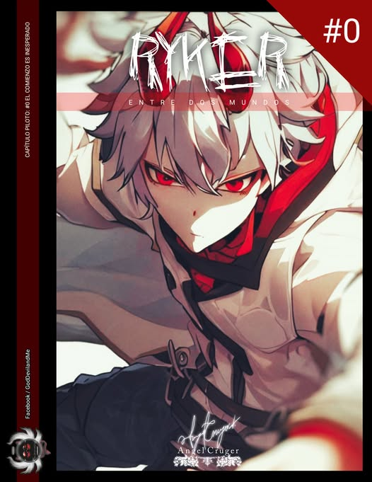
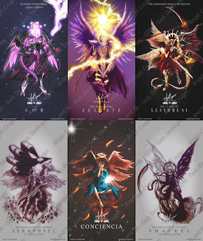

SUMARIO
GDM (God, Devil and Me)

La página y el perfil es el seudónimo o alter ego del Influencer y artista digital Angel Cruger. Desde 2015 comenzó a subir pequeñas ilustraciones e historias personalizadas. La diferencia es que no comenzó simplemente haciendo FanArt de otros sino que creó su propio universo digital del cual se desprenden muchos proyectos e historias que aunque se promocionan, siguen siendo parte reservada de la creatividad de Cruger.
Angel comentó en su cuenta de Facebook sobre el nombre que eligió para su perfil (God, Devil and Me), ya que considera que es una interpretación de cómo las personas podrían interpretarse a sí mismas, es la representación del yo, en cualquiera de sus estados. Lo bueno, lo malo y el yo conviven con uno mismo, no son diferentes conceptos de una persona sino partes integrales de la máscara que las personas suelen usar para justificar sus actos, de modo que el "Me" (Yo) significa que se muestra tal cual es sin importarle la opinión de otros.
Faceta Artística

Cuenta con muchas publicaciones sobre ilustración digital y artes, así como historias con narrativa profunda. Angel suele comentar activamente en sus plataformas principalmente en Facebook sobre algunos proyectos creativos en los que trabaja, sin embargo, muchos critican la falta de transparencia sobre la continuidad de los proyectos o las versiones de muestra que solo aparecen por poco tiempo publicadas. Angel suele ser muy cauteloso con eso, una de sus más recientes incursiones fue el cuento corto publicado según compañeros de facultad en la UNRC (Universidad Nacional Rosario Castellanos) sobre una historia de un robot que termina en un mundo antiguo y que muchos lo consideran una armadura embrujada, esta historia se fue puliendo hasta convertirse en un guion formal que se presentó como Las Crónicas de Arthelion, sin embargo, pese a existir información sobre la historia o sobre un capítulo cero, no se ha continuado con su publicación.
Esto molesta a sus seguidores quienes quieren contenidos continuos, Angel suele mantener un perfil bajo en cuanto a serializaciones, lo mismo ocurrió con Ryker entre dos mundos, El guardián secreto, El veneno más hermoso, la mini serie sobre su propia caricatura RED RAINBOW (mascota de Angel Curiosidades en estilo chibi) aunque se ha mencionado trabajar en un ArtBook recopilatorio para compensar a sus fans.

Cuenta con muchas ilustraciones entre las que destaca Arcángel Miguel sometiendo al Diablo, una pieza ilustrativa que refleja su faceta de evolución a través de los años ya que es una reinterpretación de una versión presentada en 2017. Su estilo Gótico y de Fantasía oscura lo lleva a acumular una comunidad de seguidores que buscan historias fuera de lo convencional. Una de las que más se publicó en redes sociales fue Auro aunque no se concluyó y contaba con muchos errores de edición, este trabajo ayudó a consolidarlo como artista y narrador de historias con profundidad en los personajes.
Historias y Universo creativo

Las historias de Angel suelen tener un trasfondo filosófico fuerte, y se caracterizan por ser fantasía oscura y temas futuristas. Dentro de las historias que ha desarrollado en su UNIVERSO GDM (God, Devil and Me seudónimo que suele usar en su faceta creativa aunque ha optado por firmar sus obras después simplemente como Angel Cruger y sigue siendo el nombre de su página en Facebook sobre temas de ilustración y proyectos artísticos) destacan:
-

Auro (Untold, Legends, The last Aurian´s): Una historia incompleta que trata sobre un ser que ve cómo su planeta es consumido por una raza alienígena. La historia narra la soberbia del planeta SABDOM, quienes sometían a su voluntad a otras razas, sin embargo, estaban en un planeta que agonizaba. La solución se presentó de manera extraña y fortuita cuando una raza alienígena se ofreció a ayudar al planeta, pero solo querían liberar a un antiguo mal que estaba prisionero en la fortaleza del IFROS (buscaban a un ser cuyo nombre cambió con cada edición, el que más se mantuvo fue Zadfadakiel, Shalom, Zadkiel). - The Secret Guardian (El guardián secreto, Las crónicas de Allius): La historia narra una aventura personal que le ocurre a un joven llamado Allius, quien vive en un pequeño pueblo dentro de un bosque (al parecer un reino antiguo ya que no se conocen muchos detalles, la obra se compartió por poco tiempo). Allius debe enfrentar una batalla personal y una transición a nuevos retos que lo llevarán a enfrentar su propia naturaleza. En el primer capítulo se encuentra con un ser en un lago que resulta ser una bruja atrapada en un sello antiguo y, por accidente, él la termina liberando. Se encuentra con una joven que le acompañará en su aventura; ella está en una ciudad cercana al bosque, junto a un joven quien al parecer, de forma paralela, está reclutando gente para derrocar a una gobernante llamada La pequeña reina roja. El príncipe ha perdido su reino (El reino de la voluntad del hielo). La diferencia con otras historias es que la narrativa logra ligar a Allius en su camino e historia, pero mientras sus eventos y vivencias avanzan, en el trasfondo está ocurriendo una guerra que evoluciona posiblemente a manera de Spin-off.
-

Ryker entre dos mundos: Ryker es el hijo del Rey Demonio, que vive en el Inframundo/Infierno. Debe enfrentar las terribles consecuencias de ser el hijo de un regente infernal y solo contará con un aliado: Stolas, su gran guardián y amigo. Ryker abandonará el reino de su padre para enfrentarse a los peligros del infierno en búsqueda de lograr atravesar al mundo de los humanos. Su padre lo explota debido a que él es el único capaz de despertar un poder antiguo de las leyendas, y con ello abrir un portal entre ambos mundos. No hay más información al respecto pero se sabe que cuenta con un capítulo #0, #1 y #2, recientemente con portadas presentadas. - Las Crónicas de Arthelion: Se centran principalmente en un reino antiguo que desde el primer momento recibe la inesperada visita de una armadura que se mueve, camina y habla de una manera muy extraña, por lo que muchos consideran que se trata de magia negra o algo hechizado. Para los lectores es más que claro, a través de las imágenes, que se trata de un robot que intenta explicar eso en el mundo antiguo. Esto despierta las antiguas leyendas que hablaban sobre avistamientos de extraños seres en diferentes lugares y podría ser la clave para salvar de la crisis al reino. Aquí el autor se introduce directamente en la historia al nombrar a su personaje Angel y usar el modelo de su personaje Red Rainbow en un estilo más animado. Se sabe que hubo varios borradores que se presentaron en grupos cerrados de la UNRC y es gracias a compañeros de clase que se sabe de esta historia.

Cuenta con ilustraciones seriadas sobre diferentes colecciones, así como versos y cuentos cortos que terminaron siendo otras historias, como El veneno más hermoso o Arlift Adees In the Hell (rebautizado como El infierno de Arlifth una historia muy oscura sobre el hermano de Auro y como una narrativa de una pequeña tropa ligada al ex-príncipe de las legiones de SABDOM marcada por traición termina siendo un cuento fascinante y crudo sobre la guerra). Esta última historia cambió muchas veces sus cuadros hasta centrarse en los personajes secundarios, es a través de un escrito en tercera persona como se lee la historia.
Final End´s Un mundo en Guerra es una historia sobre la colección de ilustraciones de Ángeles Legendarios. Narra el principio de una de las batallas más detalladas de su colección, y el principio de uno de los seres más enigmáticos de sus series de cartas ZERITH. La historia es corta y se sabe que entró en una edición y curación de datos para incluirlo en el ARTBOOK que el Autor mencionó estar trabajando.

ARTBOOK: Esta colección detalla según la propia página de God, Devil and Me un avance de preservación y un intento por recuperar datos de historias perdidos, continuarlos o cerrarlos de manera digna. Incluye por lo que se ha mencionado, ilustraciones inéditas, avances de nuevos proyectos, historias como El veneno más hermoso o Mi encuentro con la Bestia e incluso se menciona una de las más esperadas por los seguidores UNREAL´S una historia futurista y Cyberpunk, cuya trama indica tratarse de la próxima generación de androides conocidos como los UNREAL´S o SINTIENTES, creados por la CORPORACIÓN sin embargo despertarían la bajeza de la humanidad y estarían al borde de la extinción, sin derechos que los protejan un grupo de rebeldes luchan en las sombras contra la CORPORACIÓN ya que se cree que experimentan con humanos, uno de sus experimentos ha escapado y ahora se encuentra oculto en la megalópolis de INFINITY CITY.

FINAL END´S TCG: Angel trabajó hace varios años el concepto de un juego de cartas y se sabe que existen imágenes referentes a diferentes partes del juego con mecánicas de combate, aunque después simplemente se simplificaron a mostrar las ilustraciones más recientes a manera de cartas TCG muy detalladas.
Noticias y Publicaciones
- Angel participó en La Primera Jornada Académica de Educación, Arte y Diversidad (organizada por el IMAC).
- Ha sido invitado a colaborar en espacios creativos como invitado en videojuegos INDIE aunque él mismo ha asegurado negarse por el contenido explícito de algunos proyectos o que no se alinea con su visión creativa.
- En 2020 fue invitado a colaborar en la Revista de publicación digital en Chile SAPO, en su versión GRAPH No. 1 aparece mencionado en la página 05, 53 y 98. Enlace: https://www.calameo.com/books/005361577f7961e749de1
- Participó en la integración de la expo INFLUENCERS de 2022 pero no hay información del lugar o fotografías.
- Así como en repositorios artísticos como ArtStation o DeviantArt (aunque él ha mencionado en dichas páginas que no muestran sus trabajos más actualizados que suele compartir en sus perfiles sociales, principalmente en Facebook a través de su alter ego God, Devil and Me).